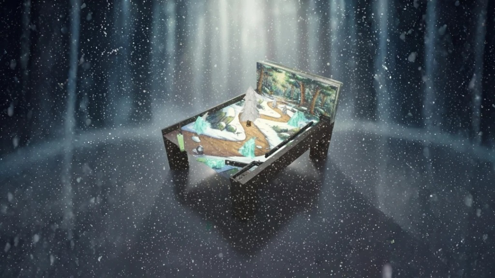

Jeu Flipper (Unity)
Un jeu de Flipper 3D développé avec le moteur Unity. Physique réaliste, score en temps réel et effets sonores immersifs.
Une sélection de mes travaux académiques et personnels les plus significatifs.
Un jeu de Flipper 3D développé avec le moteur Unity. Physique réaliste, score en temps réel et effets sonores immersifs.
Application de vision par ordinateur utilisant l'IA pour détecter les mains, le squelette et compter les doigts en temps réel via webcam.
Une expérience interactive en WebGL basée sur le célèbre tableau "Le Cri". Réalisé par "Modèle Le Cri".